rsa_helpr.RmdSince 1973, the U.S. Rehabilitation Services Administration (RSA) has partnered with state vocational rehabilitation (VR) agencies to help individuals with disabilities achieve meaningful employment and independence. RSA-911 datasets play a crucial role in this effort by capturing detailed participant data, but their complexity can hinder effective analysis.
To simplify this process, we present the software package to streamline the cleaning and analysis of RSA-911 and Transition Readiness Toolkit (TRT) data, a new measure of program effectiveness. We also deliver a user-friendly dashboard, empowering both VR researchers and counselors with the opportunity to conduct analyses. Using our developed tools, we explore the relationships between RSA-911 and TRT data, providing insights into the expanding TRT initiative.
Together, our tools enhance efficiency, accessibility, and reproducibility in VR data analysis. Freely available and compatible with any RSA-911 and TRT dataset, our software provides a flexible framework for VR research, fostering consistency and adaptability while supporting future studies.
The package can be installed with the following code:
devtools::install_github("rtaylor456new/rsa.helpr")After being installed, we can load the package:
library(rsa.helpr)As each RSA-911 dataset involves data entry by many providers across several VR agencies, the risk of erroneous or missing values is high. Using the codebook as the guide, we searched the variables for values that would need to be adjusted or could be re-coded for more meaning. These incorrect values were then replaced with either a reasonable alternative or missing values. While some missing values represent truly missing data, many of the “NULL” values in RSA-911 datasets actually represent a factor value. These values have been represented with meaningful factor levels for the sake of analysis. Several variables were wholly removed for either containing no meaningful data or unnecessary information. Some additional variables were created during this process to measure variables of interest, for example, enrollment lengths and grade levels.
Luckily, each quarterly dataset follows the same required variable naming conventions, allowing us to focus on examining the values within the variables. With 498 variables in the raw data, it follows that there are patterns of similar variable structures. For instance, certain variables that contain “amt” somewhere in the name correspond to monetary amounts, and variables that contain “provide” or “provided” somewhere in the name correspond to binary values indicating a service, accommodation, enrollment, etc. was or was not provided. These convenient clusters of variable types were among the simpler to investigate. For the majority of variables, which did not have an obvious naming similarity or structure, the values and corresponding keys within the codebook were combed. After thorough examination of all variables, more groupings were discovered, to help with eventual cleaning standardization.
As the scores data are newly collected and therefore contain a fraction of the participants with RSA-911 data, the size is significantly smaller. More importantly, the scores data consist of a concise list of variables–namely the scores for each service, the dates completed, and the itemized reports from each pre and post evaluation. Our focus in cleaning is the restructuring the format of the scores data and variable names to ensure a smooth merge with the quarterly RSA-911 data. Additionally, new variables must be created to aid with analysis, most importantly, median difference score, which is the median per individual across all of their specific service difference scores. This allows for more a more populated and simple response variable to measure.
rsa.helpr
To achieve the standardization and simplification of data cleaning,
our R package, rsa.helpr, has been developed alongside the
process of data preparation. This package provides the opportunity to
not only bypass the tedious process of data cleaning, but also to create
directly reproducible results.
load_data
This function reads in and combines RSA-911 datasets from a
user-inputted directory, preparing them for cleaning steps. All the user
must do is identify the file path in which the data are stored,
load_data does the rest by automatically searching for
appropriate datasets based on common naming structures. Not only does
this process cut down the steps and time required to individually load
and combine many datasets in R, it also provides the option for the user
to load data directly from a Box-protected storage folder. This may be
relevant to maintain security of IRB-protected datasets.
Additionally, load_data allows the user to specify any
of data files to be excluded, using the optional function argument
files. Once load_data captures all correct
data files, it merges the datasets based on common variables. (For
variables not common to all datasets, the columns are retained and
created as NULL columns for datasets without overlap.)
The following example depicts a usage of the function with default
settings. Here, the user has now stored the large, combined dataset in R
called data.
data <- load_data("C:\\Users\\Some Username\\Optional Box Folder\\Folder name")The next example demonstrates how to use the files
argument to specifically bypass select data file(s).
data <- load_data("C:\\Users\\Some Username\\Optional Box Folder\\Folder name",
files = c("PY2020Q1.csv", "PY2020Q3.csv"))Lastly, the following code provides an example of using the third
function argument, download_csv. When set to
TRUE, download_csv results in the function
outputting a csv file of the new, combined dataset to the working
directory. This is a good option when the user plans to reload the
reload the large, combined dataset in many sessions, without a concern
for keeping the data on Box.
data <- load_data("C:\\Users\\Some Username\\Optional Box Folder\\Folder name",
download_csv = TRUE)Through the process of data cleaning, small functions were created to
handle specific variable cleaning problems. These functions serve as
helper functions for repeated cleaning tasks within larger functions in
rsa.helpr. However, all of these helper cleaning functions
can be used individually, as demonstrated in the proceeding sections.
Some examples of the helper functions are shown below:
handle_mixed_date (vector input)
This function is applied to date variables and allows for correct date conversion in R for different date styles – character, Excel or date formats.
head(rsa_simulated$E7_Application_Date_911, 10)
#> [1] "NULL" "NULL" "NULL" "2023-08-30" ""
#> [6] "41067" "" "NULL" "44397" "NULL"
var_clean <- handle_mixed_date(rsa_simulated$E7_Application_Date_911)
head(var_clean, 10)
#> [1] NA NA NA "2023-08-30" NA
#> [6] "2012-06-07" NA NA "2021-07-20" NAhandle_nines (vector input)
This function is mainly applied to binary variables, with 2 levels
and a missing value represented by a 9. This function replaces ensures
missing values are represented by 9s, and when
unidentified_to_0 = TRUE, it combines the 9s with 0s.
head(rsa_simulated$E14_White_911, 10)
#> [1] 9 1 1 1 1 1 0 1 1 1
var_clean <- handle_nines(rsa_simulated$E14_White_911, unidentified_to_0 = TRUE)
head(var_clean, 10)
#> [1] 0 1 1 1 1 1 0 1 1 1handle_code (vector input)
This function handles code variables, replacing NULL, NA, blanks, etc. with NA values in R. This is utilized for consistency and the opportunity to analyze the distribution of missing information.
head(rsa_simulated$E18_Postal_Code_911, 10)
#> [1] "" "" "" "" "" "UT" "UT" "" "" "NULL"
var_clean <- handle_code(rsa_simulated$E18_Postal_Code_911)
head(var_clean, 10)
#> [1] NA NA NA NA NA "UT" "UT" NA NA NAhandle_values (vector input)
This function is one of the more flexible handle functions, as it
allows the user to input the allowed values for a variable, as well as
the accepted value to represent a missing value, through the
blank_value parameter. The following example involves a
variable which allows values 1, 2, 3, 4, where blanks should be 0s.
(blank_value defaults to NA.)
head(rsa_simulated$E99_JobExploration_Vendor_911, 20)
#> [1] "NULL" "NULL" "4" "NULL" "NULL" "NULL" "NULL" "NULL" "NULL" "2"
#> [11] "NULL" "NULL" "NULL" "4" "NULL" "NULL" "NULL" "NULL" "NULL" "NULL"
var_clean <- handle_values(rsa_simulated$E99_JobExploration_Vendor_911,
values = c(1, 2, 3, 4), blank_value = 0)
head(var_clean, 20)
#> [1] 0 0 4 0 0 0 0 0 0 2 0 0 0 4 0 0 0 0 0 0handle_abbrev (vector input)
This function cleans up a name variable, allowing for a wide variety in value structure and abbreviates each value. When the value is already shortened or abbreviated, it is left alone; otherwise, the value is abbreviated with an acronym, ignoring articles and prepositions.
tail(scores_simulated$Provider, 10)
#> [1] "A2Demo (21)"
#> [2] "Logistics Specialties Inc. (8)"
#> [3] "Logistics Specialties Inc. (8)"
#> [4] "Adams 12 (98)"
#> [5] "Columbus Community Center (9)"
#> [6] "Southern Utah University (27)"
#> [7] "Central Technology Center (Central Tech) (56)"
#> [8] "Flathead High School (42)"
#> [9] "Logistics Specialties Inc. (8)"
#> [10] "Logistics Specialties Inc. (8)"
var_clean <- handle_abbrev(scores_simulated$Provider)
tail(var_clean, 10)
#> A2Demo (21)
#> "AD"
#> Logistics Specialties Inc. (8)
#> "LSI"
#> Logistics Specialties Inc. (8)
#> "LSI"
#> Adams 12 (98)
#> "Adams"
#> Columbus Community Center (9)
#> "CCC"
#> Southern Utah University (27)
#> "SUU"
#> Central Technology Center (Central Tech) (56)
#> "CTCCT"
#> Flathead High School (42)
#> "FHS"
#> Logistics Specialties Inc. (8)
#> "LSI"
#> Logistics Specialties Inc. (8)
#> "LSI"handle_splits (vector input)
This function is used to separate variables with values including special characters. It allows for differing lengths of values (e.g. 1, 1;2, 3;3;4, NA). It separates by the identified special character and creates new variables, based on the original name, with one value per column.
head(rsa_simulated$E395_App_Medical_911)
#> [1] "" "1;2" "" "" "" "1"
var_clean <- handle_splits(rsa_simulated$E395_App_Medical_911,
var_name = "E395_App_Medical_911")
lapply(var_clean, head)
#> $E395_App_Medical_911_Place1
#> [1] NA "1" NA NA NA "1"
#>
#> $E395_App_Medical_911_Place2
#> [1] NA "2" NA NA NA NAapply_handle_splits (data frame input)
This function allows the user to apply the handle_splits
function across multiple variables in a dataset. Rather than intaking a
vector input, the user applies this function to an entire data
frame.
rsa_subset <- rsa_simulated[, c("E395_App_Medical_911", "E396_Exit_Public_Support_911",
"E142_FourYear_Comp_911")]
special_cols <- c("E395_App_Medical_911", "E396_Exit_Public_Support_911",
"E142_FourYear_Comp_911")
df_clean <- apply_handle_splits(rsa_subset, special_cols, sep = ";")
head(df_clean, 10)
#> E395_App_Medical_911_Place1 E395_App_Medical_911_Place2
#> 1 <NA> <NA>
#> 2 1 2
#> 3 <NA> <NA>
#> 4 <NA> <NA>
#> 5 <NA> <NA>
#> 6 1 <NA>
#> 7 4 5
#> 8 <NA> <NA>
#> 9 7 <NA>
#> 10 7 <NA>
#> E396_Exit_Public_Support_911_Place1 E396_Exit_Public_Support_911_Place2
#> 1 <NA> <NA>
#> 2 <NA> <NA>
#> 3 <NA> <NA>
#> 4 <NA> <NA>
#> 5 <NA> <NA>
#> 6 <NA> <NA>
#> 7 <NA> <NA>
#> 8 <NA> <NA>
#> 9 <NA> <NA>
#> 10 <NA> <NA>
#> E142_FourYear_Comp_911_Place1 E142_FourYear_Comp_911_Place2
#> 1 <NA> <NA>
#> 2 <NA> <NA>
#> 3 <NA> <NA>
#> 4 <NA> <NA>
#> 5 <NA> <NA>
#> 6 <NA> <NA>
#> 7 <NA> <NA>
#> 8 <NA> <NA>
#> 9 <NA> <NA>
#> 10 <NA> <NA>separate_disability (data frame input)
This function intakes an entire dataset, identifies special
disability columns, and separates them into meaningful individual value
columns. Unlike the apply_handle_splits function, this
function deals with the Primary_Disability and Secondary_Disability
variables, which contain specifically 2 values in a uniform
structure.
head(rsa_simulated$E43_Primary_Disability_911, 10)
#> [1] "" "" "17;25" "NULL" "" "" "" "" "18;29"
#> [10] "13;1"
head(rsa_simulated$E44_Secondary_Disability_911, 10)
#> [1] "17;7" "" "" "" "" "14;6" "" "14;6" "" ""
data_clean <- separate_disability(rsa_simulated[1:100])
head(data_clean$Primary_Cause, 10)
#> [1] NA NA "25" NA NA NA NA NA "29" "1"
head(data_clean$Primary_Impairment, 10)
#> [1] NA NA "17" "NULL" NA NA NA NA "18" "13"
head(data_clean$Secondary_Cause, 10)
#> [1] "7" NA NA NA NA "6" NA "6" NA NA
head(data_clean$Secondary_Impairment, 10)
#> [1] "17" NA NA NA NA "14" NA "14" NA NAAs the underlying premise of this package design is reproducibility
and simplicity, two main functions were created to encompass all
necessary cleaning steps in one run. Functions clean_utah
and clean_scores yield fully cleaned datasets, each with a
single function call. These complicated functions do all of the work
under the hood for the user, enlisting the helper functions, additional
restructuring steps, and type classification. These functions utilize
regular expressions in order to make variable identification robust
against naming differences. They also include checks to handle conflicts
in expected and and observed variable structures.
clean_utah and clean_scores can be run simply,
by inputting only the dataset and no other arguments, using default
settings, as shown below:
The following code demonstrates the simplicity of running the one-stop cleaning function for quarterly (Utah RSA-911) data, using defaults.
rsa_clean <- clean_utah(rsa_simulated)aggregate
The aggregate parameter of the clean_utah
function removes duplicate rows for participants per quarter. It
defaults to TRUE, and when set to TRUE, we retain only the most recent
row per quarter across participants.
dim(rsa_simulated)
#> [1] 1988 518
rsa_clean <- clean_utah(rsa_simulated, aggregate = TRUE)
dim(rsa_clean)
#> [1] 1459 333unidentified_to_0
The unidentified_to_0 parameter of the
clean_utah function converts missing values in various
forms to 0 for appropriate variables when set to TRUE (TRUE is the
default). In the following example, we show a binary variable which uses
9s to identify missing values. In our cleaning function, we would have
first cleaned the variable to only use 9s to represent missings, then
convert to 0.
rsa_clean <- clean_utah(rsa_simulated, unidentified_to_0 = TRUE)
head(rsa_clean$E42_Has_Disability_911)
#> [1] 0 1 1 1 1 1
#> Levels: 0 1
rsa_clean <- clean_utah(rsa_simulated, unidentified_to_0 = FALSE)
head(rsa_clean$E42_Has_Disability_911)
#> [1] 9 1 1 1 1 1
#> Levels: 0 1 9remove_desc
The remove_desc parameter of the clean_utah
function removes unnecessary descriptor variables when set to TRUE, the
default. These descriptor variables include the meanings for symbolic
numeric values, but they can be distracting and bulky. An example of
removing the variables is shown below.
names(rsa_simulated)[10:20]
#> [1] "E10_Indian_Alaskan_Desc" "E11_Asian_911"
#> [3] "E11_Asian_Desc" "E12_Black_African_911"
#> [5] "E12_Black_African_Desc" "E13_Hawaiian_Pacific_Islander_911"
#> [7] "E13_Hawaiian_Pacific_Islander_Desc" "E14_White_911"
#> [9] "E14_White_Desc" "E15_Hispanic_Latino_911"
#> [11] "E15_Hispanic_Latino_Desc"
names(rsa_clean)[5:12]
#> [1] "E4_Agency_Code_911" "E7_Application_Date_911"
#> [3] "E9_Gender_911" "E10_Indian_Alaskan_911"
#> [5] "E11_Asian_911" "E12_Black_African_911"
#> [7] "E13_Hawaiian_Pacific_Islander_911" "E14_White_911"remove_strictly_na
The remove_strictly_na parameter of the
clean_utah function, when set to TRUE, removes variables
that have exclusively missing values at the end of the cleaning process.
This parameter defaults to TRUE, as removing unhelpful variables and
clutter in the data are typical goals of the cleaning process.
rsa_clean <- clean_utah(rsa_simulated, remove_strictly_na = FALSE)
na_cols <- names(rsa_clean)[sapply(rsa_clean, function(x) all(is.na(x)))]
na_cols
#> [1] "E46_Trial_Work_Start_911" "E47_Trial_Work_End_911"
#> [3] "E89_Master_Date_911" "E90_Graduate_Date_911"
#> [5] "E93_License_Date_911" "E95_Credential_Date_911"
#> [7] "E131_Graduate_Vendor_911" "E159_OJT_Vendor_911"
#> [9] "E165_Apprenticeship_Vendor_911" "E200_RandolphSheppard_Vendor_911"
#> [11] "E207_Custom_Vendor_911" "E228_Counseling_Vendor_911"
#> [13] "E263_Referral_Vendor_911" "E270_Benefits_Vendor_911"
#> [15] "E277_CustomEmploy_Vendor_911" "E284_Extended_Vendor_911"
#> [17] "E310_Attendant_Vendor_911" "E317_TechAssist_Vendor_911"
#> [19] "E324_Reader_Vendor_911" "E331_Interpreter_Vendor_911"
#> [21] "E346_Skill_Gain_Training_911" "E377_PostExit_Credential_Date_911"
#> [23] "E378_PostExit_Credential_911" "E411_HomeModification_Vendor_911"
#> [25] "E412_HomeModification_TitleI_911"
rsa_clean <- clean_utah(rsa_simulated, remove_strictly_na = TRUE)
na_cols <- names(rsa_clean)[sapply(rsa_clean, function(x) all(is.na(x)))]
na_cols
#> character(0)The following code is an example of running the
clean_scores function, using defaults for ultimate
simplicity. Note that when run with defaults, we are provided a warning
about participant ID values if our data contain multiple states.
scores_clean <- clean_scores(scores_simulated)
#> Warning in clean_scores(scores_simulated): There are multiple states with
#> overlapping Participant IDs. State abbreviations will be appended to
#> Participant IDstate_filter
The state_filter parameter of the
clean_scores function allows the user to extract only data
from the state(s) of interest. As shown in the above example, when
state_filter is not provided, the cleaning function will
retain all states–if there are multiple–in the data. However, it will
append the state abbreviation to the ID, as IDs are not unique across
states. Below is an example of cleaning our scores data (which contain
multiple states’ data), extracting only the data from Utah.
unique(scores_simulated$State)
#> [1] "Utah" "Oklahoma" "Montana" "Demo" "Colorado" "Wyoming"
scores_clean <- clean_scores(scores_simulated, state_filter = "Utah")clean_ID
The clean_ID parameter of the clean_scores
function defaults to TRUE, and when set to TRUE, will remove rows of the
data where participant ID is missing. Data with missing IDs often are
fully empty rows and are best removed to avoid errors and clutter.
scores_clean <- clean_scores(scores_simulated, state_filter = "Utah",
clean_id = TRUE)
sum(is.na(scores_clean$Participant_ID))
#> [1] 0aggregate
Similar to the aggregate parameter of the
clean_utah function, the clean_scores removes
duplicate scores for participants per TRT service test. It defaults to
TRUE, and when set to TRUE, we retain only the most recent score per TRT
service across participants.
dim(scores_simulated)
#> [1] 1800 32
scores_clean <- clean_scores(scores_simulated, aggregate = TRUE)
#> Warning in clean_scores(scores_simulated, aggregate = TRUE): There are multiple
#> states with overlapping Participant IDs. State abbreviations will be appended
#> to Participant ID
dim(scores_clean)
#> [1] 454 70id_col
This parameter allows for the user to specify an ID column with a different naming structure than expected. We will not run the following code, as our data do have appropriate ID column names, but below is an example of identifying a variable, “X”, as our ID column.
scores_clean <- clean_scores(scores_simulated, id_col = "X")Beyond preparing the TRT scores data for a successful merge with RSA-911 data, we can restructure TRT scores datasets for independent analysis. Newly collected variables containing provider information are of interest to researchers. With these variables, the focus is examining trends across providers, not individual participants.
The following code demonstrates applying clean_provider
using function arguments that are also seen and discussed in the
previous clean_scores examples.
provider_data <- clean_provider(scores_simulated, state_filter = "Utah",
clean_id = TRUE)Below is an example of implementing additional function arguments in
clean_provider. The argument remove_questions
allows the user to remove columns related to itemized score data, which
are not pertinent to provider analysis. condense is similar
to the aggregate argument in clean_scores, as
it involves retaining rows by unique values. Unlike
aggregate, condense retains the unique
combinations of provider and service. In clean_provider,
the new sorting column is Provider, rather than Participant.
provider_data <- clean_provider(scores_simulated, state_filter = "Utah",
clean_id = TRUE,
remove_questions = TRUE,
condense = TRUE)In order to run analysis to link the effects of the RSA-911
demographic data to the scores results, we needed to merge and condense
our data. Again, functions were created to handle the mechanics of these
processes while maintaining simplistic calls for the user.
merge_scores takes cleaned quarterly and scores data and
conducts a merge, resulting in only data corresponding to matched
participants. create_metadata in turn takes a cleaned,
merged dataset and condenses to metadata, with one row per unique
participant. This function uses the same methods as described in the
Data Cleaning section to summarize (medians, most common occurrences,
most recent values).
This function is to be run on cleaned RSA-911 quarterly and TRT
scores datasets. Note that this function allows the user to specify the
ID variable names in each dataset being merged, but the defaults are
Participant_ID for each.
rsa_clean <- clean_utah(rsa_simulated, aggregate = FALSE)
scores_clean <- clean_scores(scores_simulated, state_filter = "Utah")
merged_data <- merge_scores(rsa_clean, scores_clean)
#> >>> NEW merge_scores WITH copy() <<<
dim(merged_data)
#> [1] 1906 402
metadata <- create_metadata(merged_data)
nrow(metadata)
#> [1] 249
length(unique(metadata$Participant_ID))
#> [1] 249Below is an example of the process of producing fully cleaned,
condensed metadata using rsa.helpr functions:
# Cleaning an RSA-911 datset using defaults
rsa_clean <- clean_utah(rsa_simulated, aggregate = FALSE)
# Cleaning a scores dataset using defaults and extracting only Utah data
scores_clean <- clean_scores(scores_simulated, state_filter = "Utah")
# Merge the datasets, keep only relevant participants, using defaults
merged_data <- merge_scores(rsa_clean, scores_clean)
# Generate the condensed metadata
metadata <- create_metadata(merged_data)These four functions provide any researcher with a completely reproducible process for preparing data, all with incredible ease.
To support analysis following data preparation, we provide three functions for the visualizations we anticipate to be used most often.
visualize_densities greatly simplifies the process of
creating a density plot to compare the distributions across levels of a
qualitative variable. While other plotting functions in R
can be easily applied to cleaned variables, creating a density plot
across categories requires a higher level of coding proficiency. To
provide researchers with less R fluency the ability to use
these valuable plots, the visualize_densities function
handles all of the necessary programming steps internally. The user must
simply input the quantitative and categorical variables of interest, and
the density plot is produced, with appropriate labels. The following
code provides two examples of utilizing the function. The first,
plotting median difference scores across gender, relies on the function
defaults. This example demonstrates the warnings produced when a level
of the categorical/grouping variable is too sparse, as well as when
level labels are not provided by the user.
visualize_densities(metadata$E9_Gender_911,
metadata$Median_Difference_Score)
#> Warning in visualize_densities(metadata$E9_Gender_911,
#> metadata$Median_Difference_Score): Level labels will be automated based on the
#> valid/populated levels of the categorical variable.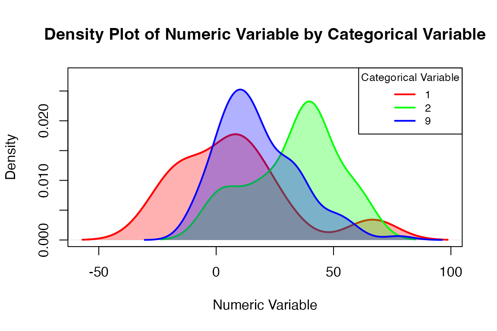
The next example, examining exit wages across disability priority levels, shows customizing the plot a bit more using some of the parameters.
visualize_densities(metadata$E45_Disability_Priority_911,
metadata$Median_Difference_Score,
cat_var_name = "Disability Priority",
num_var_name = "Median Diff. Score",
level_labels = c("Not severe", "Severe",
"Highly severe"))
#> Warning in visualize_densities(metadata$E45_Disability_Priority_911,
#> metadata$Median_Difference_Score, : The following level(s) have inadequate data
#> (< 2 obs.) for density plots: '0'. These levels will not be plotted.
#> Warning in visualize_densities(metadata$E45_Disability_Priority_911,
#> metadata$Median_Difference_Score, : Level labels will be automated based on the
#> valid/populated levels of the categorical variable.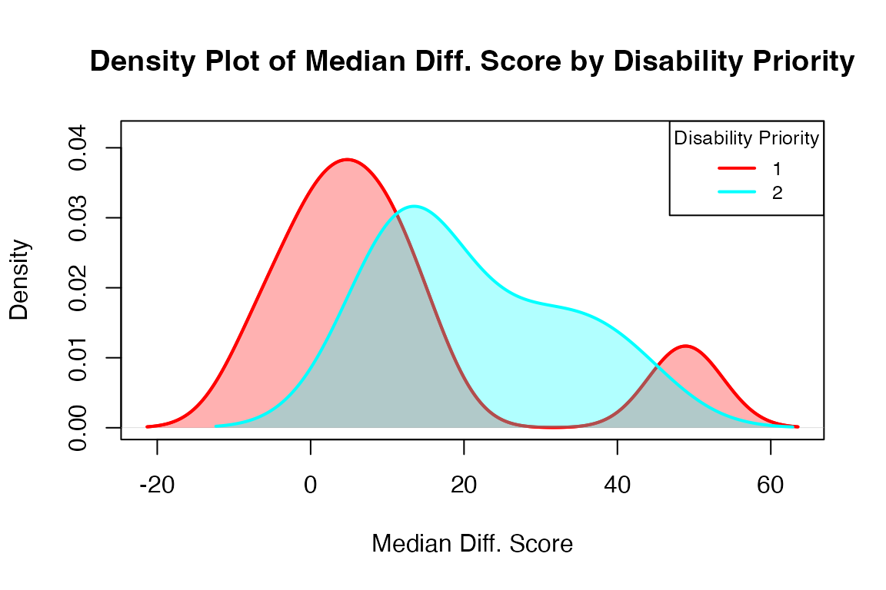
The functions visualize_metadata and
visualize_scores offer more extensive visualizations. These
larger functions provide a shortcut to standard visualizations, simply
requiring the user to input a cleaned dataset and selected type of
analysis in order to generate a series of exploratory plots. A select
set of commonly-examined variables are used in these visualizations.
visualize_metadata(metadata, option = "general_demo",
one_window = TRUE)
#> Columns identified: Median_Time_Passed_Days; Enroll_Length; E9_Gender_911; E10_Indian_Alaskan_911, E11_Asian_911, E12_Black_African_911, E13_Hawaiian_Pacific_Islander_911, E14_White_911, E15_Hispanic_Latino_911; Final_Employment; E45_Disability_Priority_911; Primary_Impairment_Group; Secondary_Impairment_Group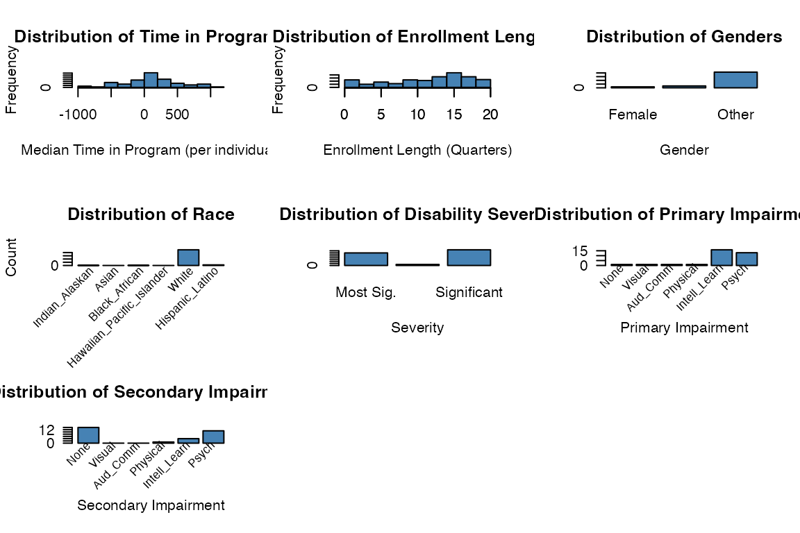
rsa.helpr::visualize_metadata(metadata, option = "investigate_scores",
one_window = TRUE)
rsa.helpr::visualize_metadata(metadata, option = "investigate_wage",
one_window = TRUE)
#> Columns identified: Median_Time_Passed_Days; Enroll_Length; E9_Gender_911; E10_Indian_Alaskan_911, E11_Asian_911, E12_Black_African_911, E13_Hawaiian_Pacific_Islander_911, E14_White_911, E15_Hispanic_Latino_911; Final_Employment; E45_Disability_Priority_911; Primary_Impairment_Group; Secondary_Impairment_Group;E359_Exit_Hourly_Wage_911
#> Warning in visualize_densities(cat_var = data[[sex_col]], num_var =
#> data[[wage_col]], : Level labels will be automated based on the valid/populated
#> levels of the categorical variable.
#> Warning in visualize_densities(cat_var = data[[severity_col]], num_var =
#> data[[wage_col]], : Not enough observations per level for density plots.
#> Displaying boxplots instead.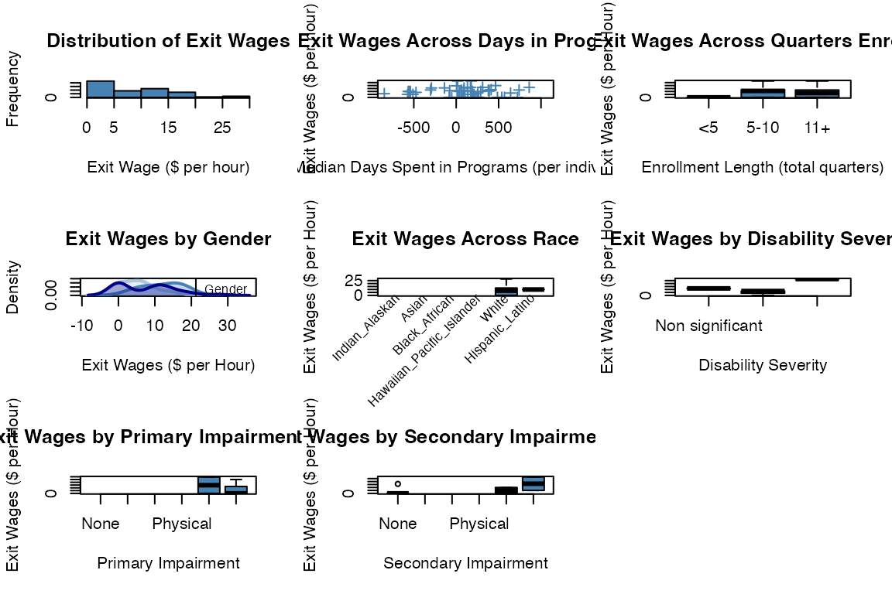
rsa.helpr::visualize_metadata(metadata, option = "investigate_employment",
one_window = TRUE)
#> Columns identified: Median_Time_Passed_Days; Enroll_Length; E9_Gender_911; E10_Indian_Alaskan_911, E11_Asian_911, E12_Black_African_911, E13_Hawaiian_Pacific_Islander_911, E14_White_911, E15_Hispanic_Latino_911; Final_Employment; E45_Disability_Priority_911; Primary_Impairment_Group; Secondary_Impairment_Group;E359_Exit_Hourly_Wage_911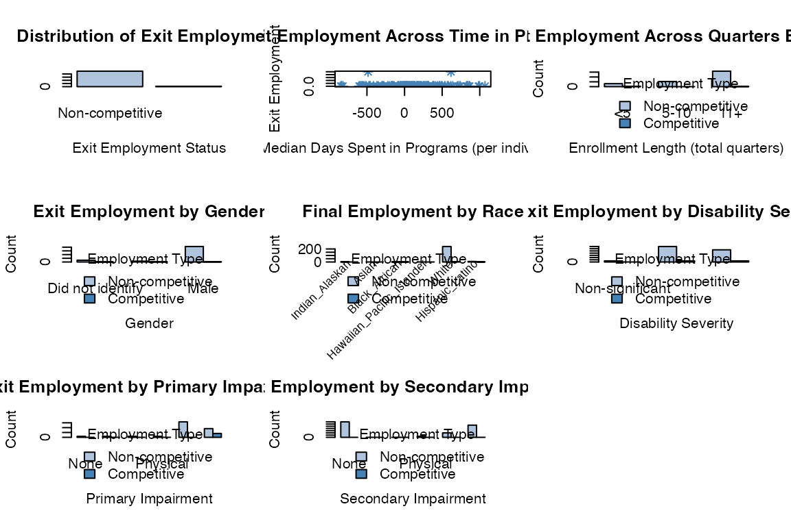
rsa.helpr::visualize_scores(scores_clean, option = "overview",
one_window = TRUE)
#> Columns identified: Median_Difference_Score; Median_Time_Passed_Days; Differences_Available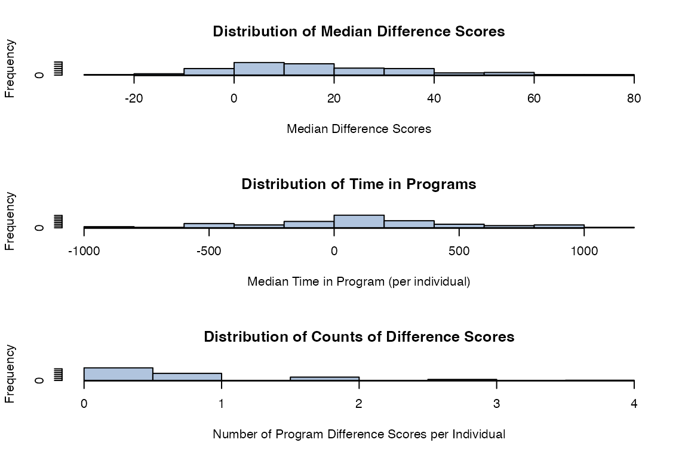
rsa.helpr::visualize_scores(scores_clean, option = "across_service",
one_window = TRUE)
#> Columns identified: Difference_CPSO, Difference_CSS, Difference_FL, Difference_ILOM, Difference_ISA, Difference_JOBEX, Difference_JS, Difference_QWEX, Difference_WBLE, Difference_WSS; Pre_Score_CPSO, Pre_Score_CSS, Pre_Score_FL, Pre_Score_ILOM, Pre_Score_ISA, Pre_Score_JOBEX, Pre_Score_JS, Pre_Score_QWEX, Pre_Score_WBLE, Pre_Score_WSS, Pre_Date_CPSO, Pre_Date_CSS, Pre_Date_FL, Pre_Date_ILOM, Pre_Date_ISA, Pre_Date_JOBEX, Pre_Date_JS, Pre_Date_QWEX, Pre_Date_WBLE, Pre_Date_WSS; Post_Score_CPSO, Post_Score_CSS, Post_Score_FL, Post_Score_ILOM, Post_Score_ISA, Post_Score_JOBEX, Post_Score_JS, Post_Score_QWEX, Post_Score_WBLE, Post_Score_WSS, Post_Date_CPSO, Post_Date_CSS, Post_Date_FL, Post_Date_ILOM, Post_Date_ISA, Post_Date_JOBEX, Post_Date_JS, Post_Date_QWEX, Post_Date_WBLE, Post_Date_WSS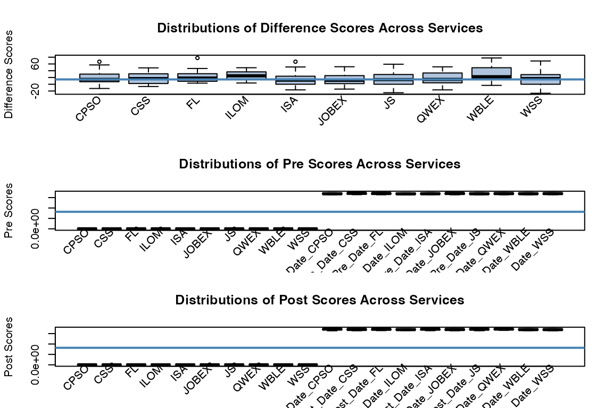
rsa.helpr::visualize_scores(scores_clean, option = "across_provider",
one_window = TRUE)
#> Columns identified: Median_Difference_Score; Provider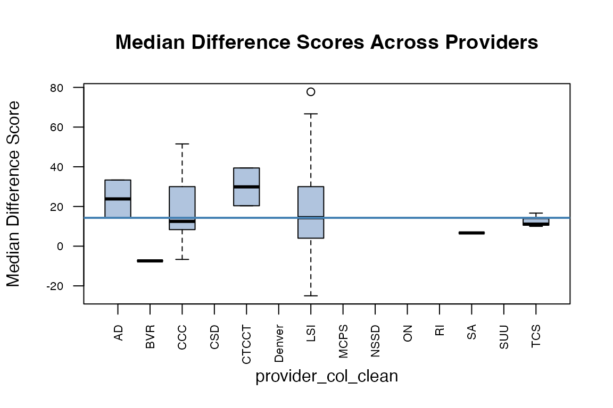
rshiny Data Dashboard
While our rsa.helpr package alleviates the burden of
data cleaning within R, aiding VR researchers in their study, the level
of accessibility needs to be extended. Beyond VR researchers, the hope
is to allow visibility of summaries and results to those professionals
who are actually working with participants and recording these data.
Requiring a familiarity with R creates a degree of separation between
the VR professionals and their data interpretation. To mitigate this, we
have developed an interactive data dashboard, titled “RSA-911 Data
Exploration”, that will be made accessible online. This
rshiny dashboard runs on the rsa.helpr
package, maintaining a consistent thread between any analysis run in R
or observed in the dashboard.
The user begins by uploading their desired quarterly RSA-911 and/or scores dataset(s). The following example shows one RSA-911 large dataset uploaded, but the user may upload several files at once. Once the datasets are fully uploaded, the dashboard automatically begins applying the cleaning functions to the data. The adjustable function arguments are provided as checkbox options for the user. Any time the user adjusts the selections, the cleaning function will re-run. The status is shown in the progress bars. Once the datasets are uploaded and fully cleaned, they are stored in the session and displayed with a dimension summary for inspection.
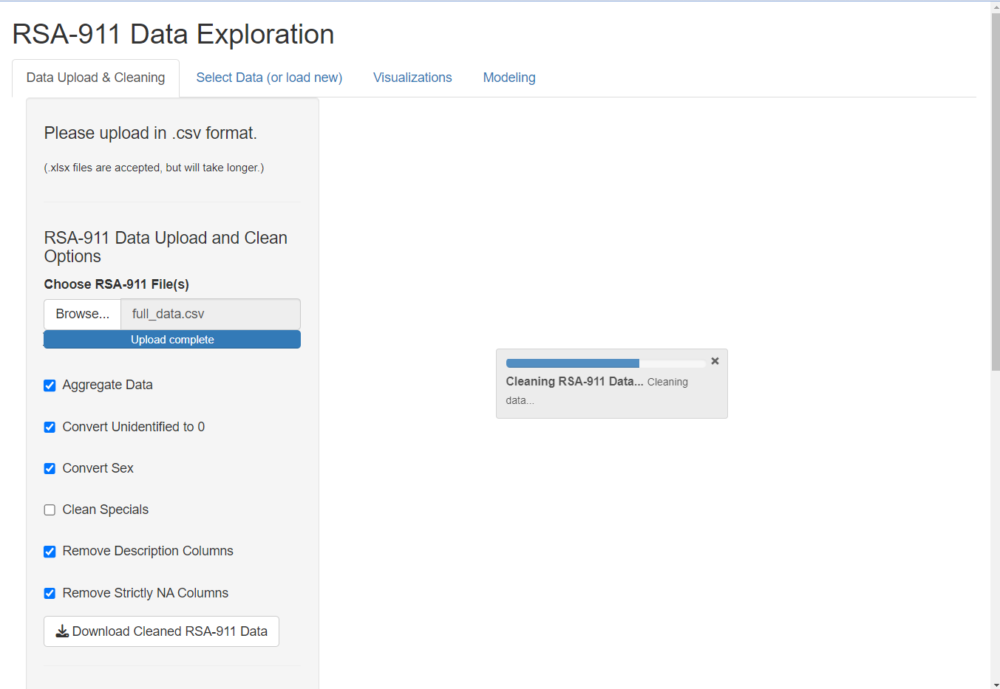
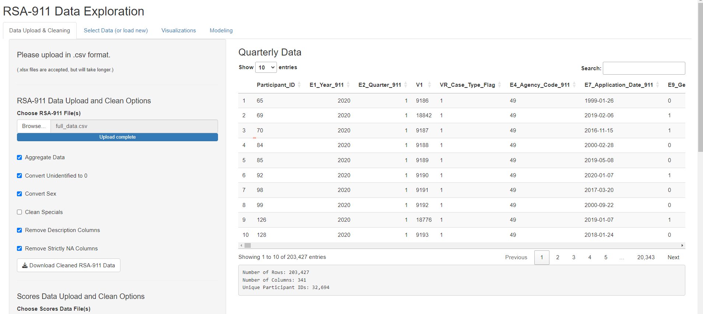
If the user uploads both quarterly and scores data, the dashboard automatically creates a merged data set, displayed in the main page. As condensing the data is a slower process, the metadata will not be generated automatically. The user may click the “Generate Metadata” button to initiate this. Again, a progress bar will indicate status and the final data will be displayed. (Note: the user may choose to create metadata using only the quarterly data, but this is not the default.)
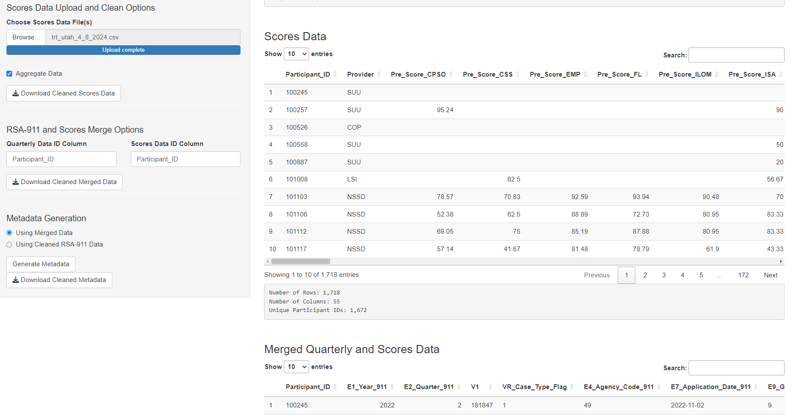
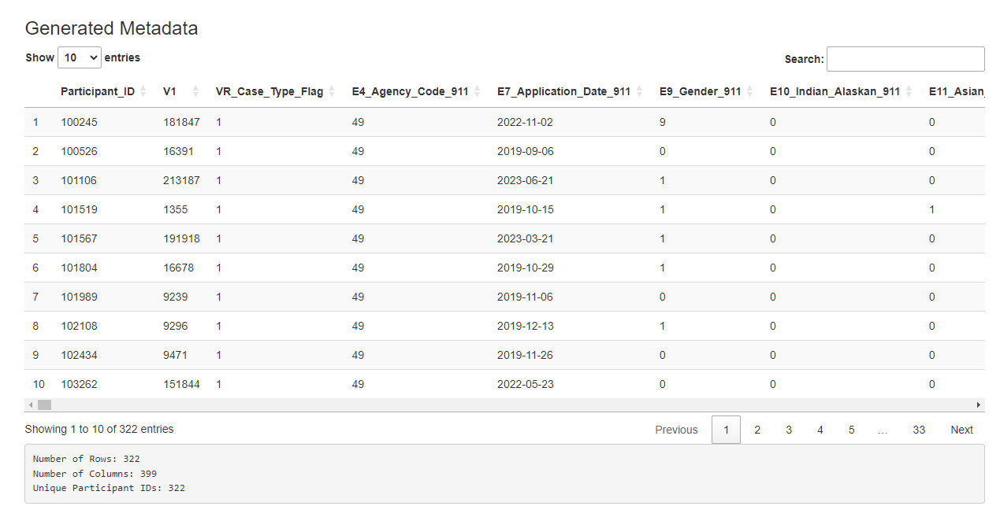
Now, with the datasets stored in the session, we choose which one we would like to visualize and model. The user has the option to upload a new dataset, and select which type. This is an option provided for a user who has already cleaned the data using the app and is returning in a new session.
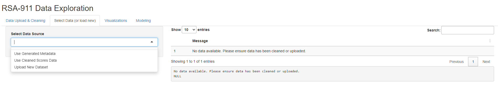
Different visualization tabs pop up depending on the dataset selected. When the user selects “Use Generated Metadata”, they have four tabs with many visuals on each to examine. Some provide general visual summaries of high interest demographics, some provide visuals relevant to modeling options. This figure provides an example of the output.
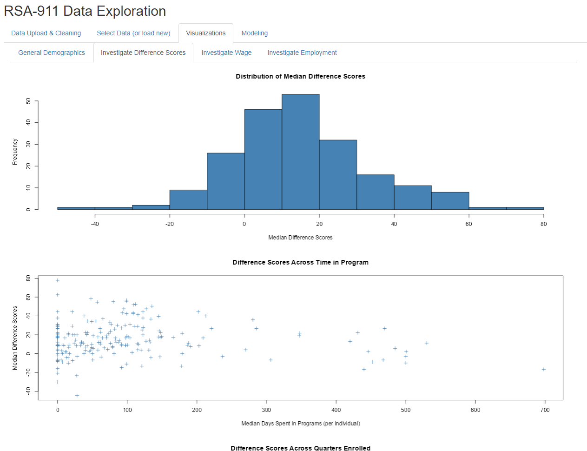
Different modeling options pop up depending on the dataset selected. When the user selects “Use Generated Metadata”, they have the option of fitting OLS models for predicting Median Difference Score or Ending Wage, or fitting a logistic regression model for predicting Employment Outcome (1: competitively employed, 0: not competitively employed). Then, the user can select different combinations of predictors, with the model being recalculated for each change. Note that this subset of predictors was selected for simplicity and based on the advice of our collaborator, Dr. Phillips. Once fitted, the model output will then be shown, as well as its corresponding residual plots.
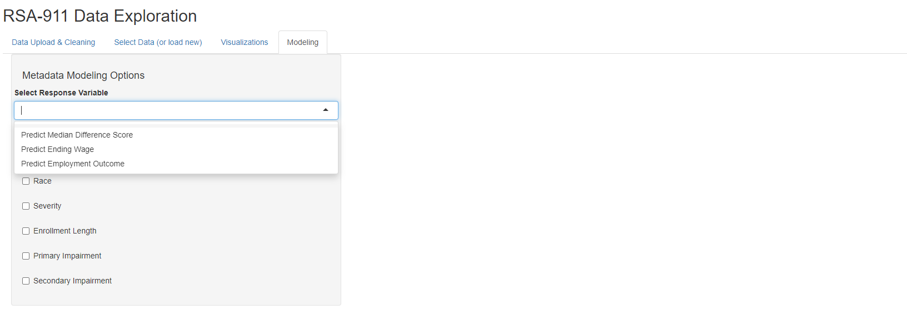
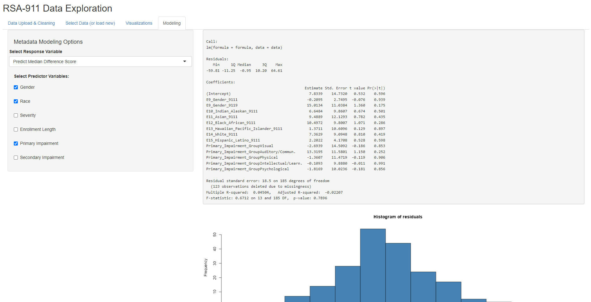
When the user selects “Use Cleaned Scores Data”, they have three tabs with several visuals on each to examine. Some provide general visual summaries of score distributions, some provide visuals relevant to modeling options. This figure provides an example of the output.
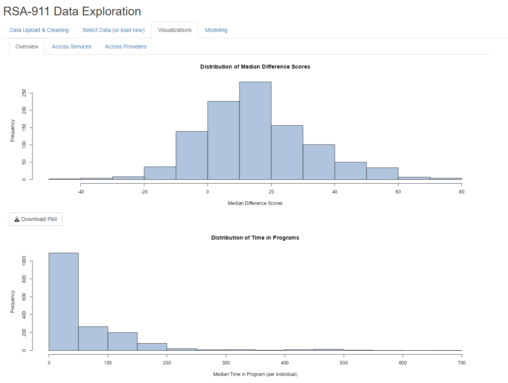
When the user selects “Use Cleaned Scores Data”, they have the option of two different ANOVA models, either for comparing median difference scores across services or across providers. Once run, the ANOVA output will then be shown, as well as any significant pairwise comparisons and residual plots.
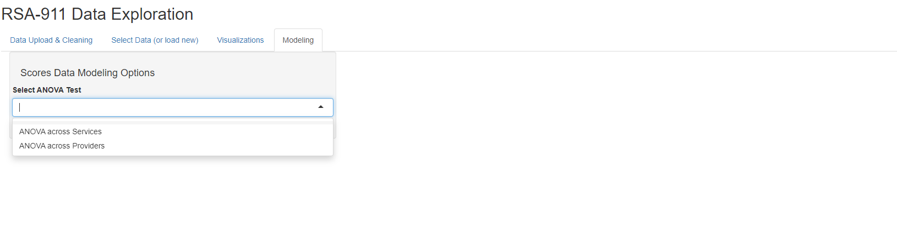
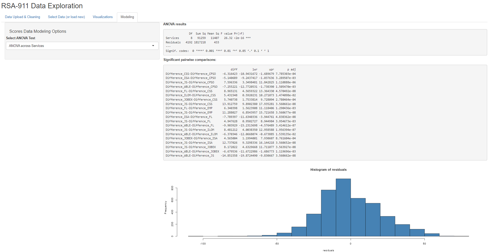
The rsa.helpr package provides VR researchers with a
tool to prepare data more efficiently and consistently, allowing their
focus to be on exploration and analysis. Additionally, through its
support in the interactive “RSA-911 Data Exploration” dashboard,
rsa.helpr provides VR professionals the opportunity to
monitor and explore key trends as they do the ground work of data
collection. As this project is part of ongoing thesis research, there is
more refinement left before it is complete. The majority of the focus
will be on the remaining edits and additions to the package and the
dashboard application, as these are the significant contributions to the
field. Once our dashboard is finalized, we will release it in an online
form, so that it can be accessed without requiring R installation.